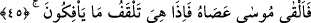
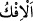
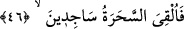

Büyüklerden birisi demiştir ki: “İnsanlar sihirbazların göz boyama türünden
hazırladıkları şeylerin çokluğunu ve Mûsâ (a.s.)’ın asâsının onların yanında hiçliğini
görünce ona küçümseyerek baktılar. Çoğun aza üstün geleceğini zannettiler. Az nûrun
çok zulmeti silip yok ettiği gibi haktan az olanın bâtıldan çok olanı ortadan kaldıracağını
bilemediler.
Hâfız der ki:
Gökyüzünün kendi feyziyle su verdiği kılıç
Askerin yardımı olmadan tek başına cihanı fetheder
45. Sonra Musa asâsını attı; bir de ne görsünler, onların uydurduklarını
yutuveriyor!
“Sonra Musa” ilâhî emir ile “asâsını attı; bir de ne görsünler,” o asâ ejderha olmuş
“onların uydurduklarını” sihirbazların hile ve sahtekârlıkla yapıp halka yılan diye
gösterdikleri şeyi, yani göz boyama ve yalanı süsleyip gerçek diye yutturma yoluyla
kendi aslı ve şekli olan cansız varlık olmaktan başkasına çevirdikleri, hızla hareket
eden yılanlar gibi gösterdikleri değneklerini ve iplerini hızla “yutuveriyor!”
“__WORD__ yalan, “__WORD__ ise bir şeyi bir şeyden çevirmek, döndürmek demektir.
Mükâşefe ehlinin büyüklerinden Şeyh-i Ekber, el-Fütûhât’ta sihirbazların iplerinden
ve değneklerinden yılanların şekilleri alındı/giderildi. Böylece insanlara aslında olduğu
gibi ipler ve değnekler olarak göründü. Tıpkı hasımlardan birinin hak ile hasmının
delilini geçersiz kılması, böylece o delilin geçersiz olduğunun ortaya çıkması gibi.
Yoksa cumhûrun kabul ettiği gibi iplerin ve değneklerin kendileri yutulmadı. Aksi halde
sihirbazlar Mûsâ’nın asâsı konusunda şüphelenirler, işin aslı onlara gizli kalır ve îman
etmezlerdi. O zaman Mûsâ (a.s.)’ın ortaya koyduğu şey, sihirbazların yaptıkları şeyler
kabilinden olur, ancak onun sihri onlarınkinden daha kuvvetli olmuş olurdu. Bizim bu
görüşümüze bu âyetteki “onların uydurduklarını yutuveriyor” ifâdesi ve “onların
yaptıklarını yutsun” (Tâhâ, 20/69) ifâdesi de delâlet eder. Onlar sihirleriyle iplerin
kendilerini uydurmamışlar ve değnekleri yapmamışlardır. Ancak seyredenlerin gözünde
yılan şekillerini uydurmuşlar ve yapmışlardır. Mûsâ (a.s.)’ ın asâsının yutuverdiği de
işte bunlardır. Bu hususu İmam Şa’rânî, el-Kibrîtü’l-ahmer’de zikretmiştir.
46. (Bunu görünce) sihirbazlar derhal secdeye kapandılar.